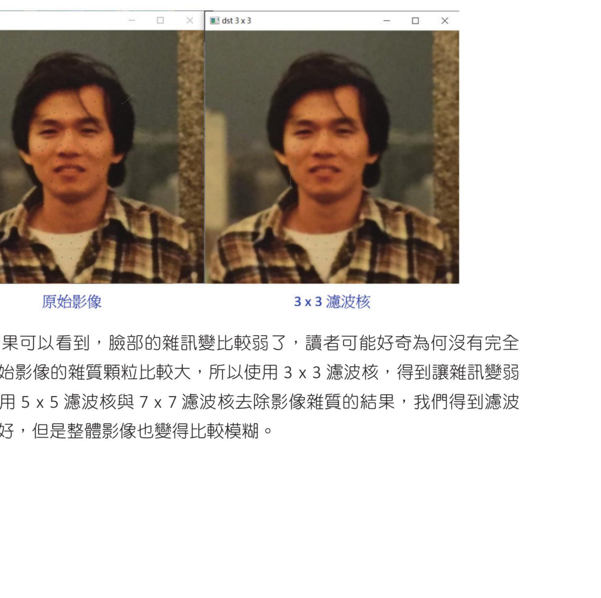
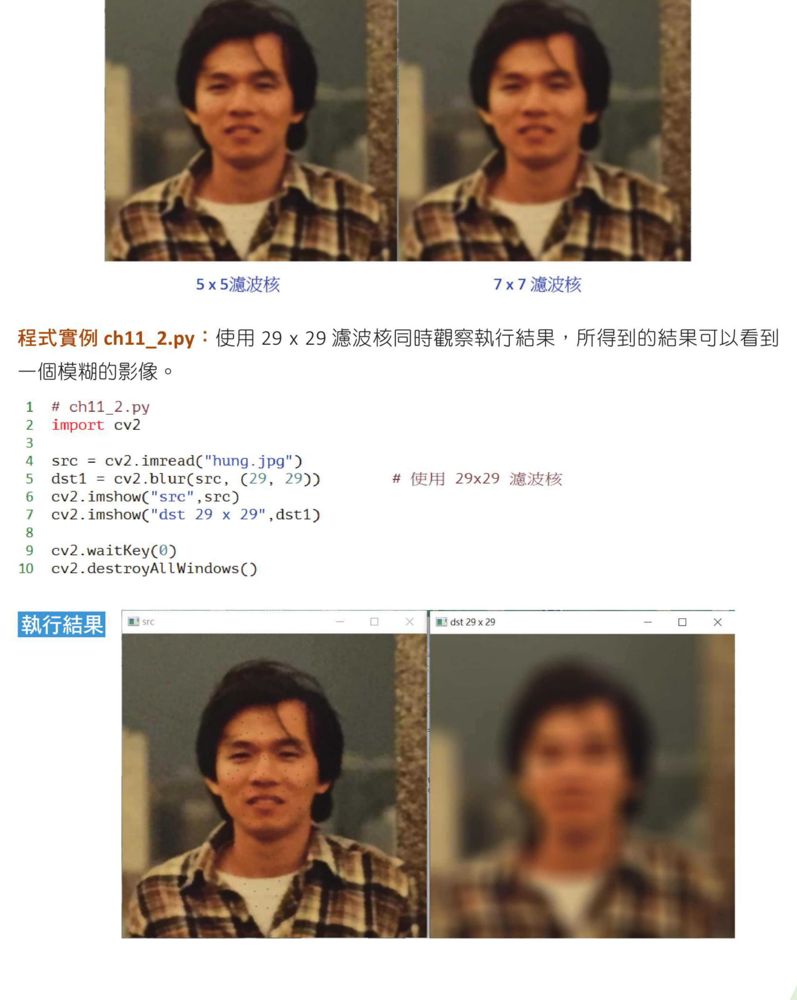
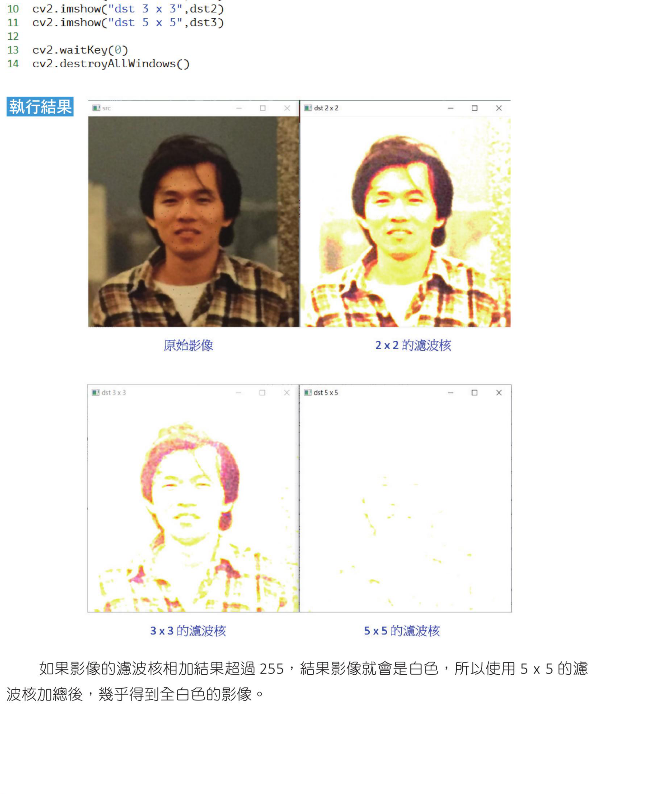
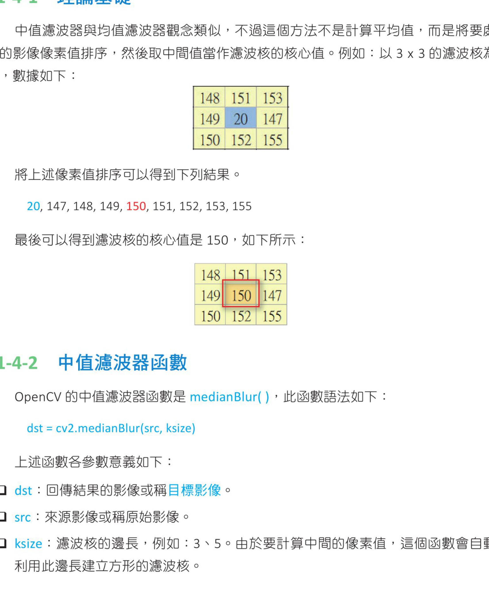
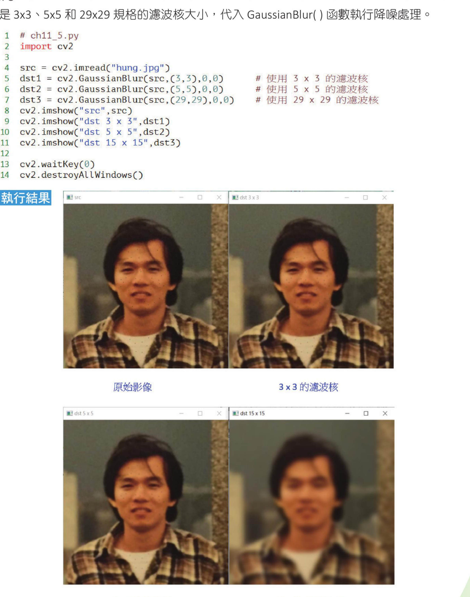
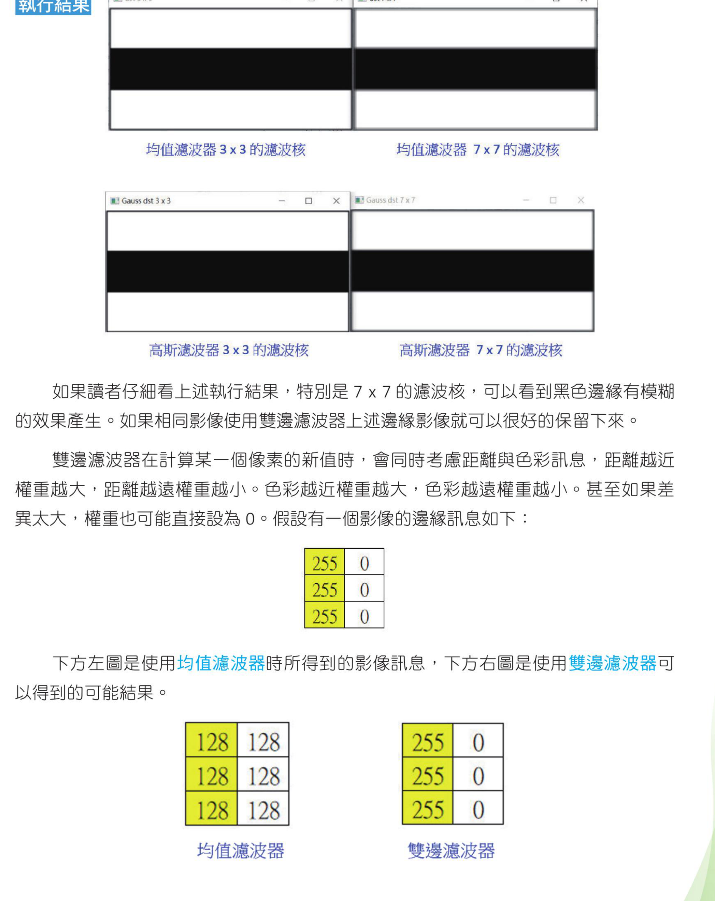
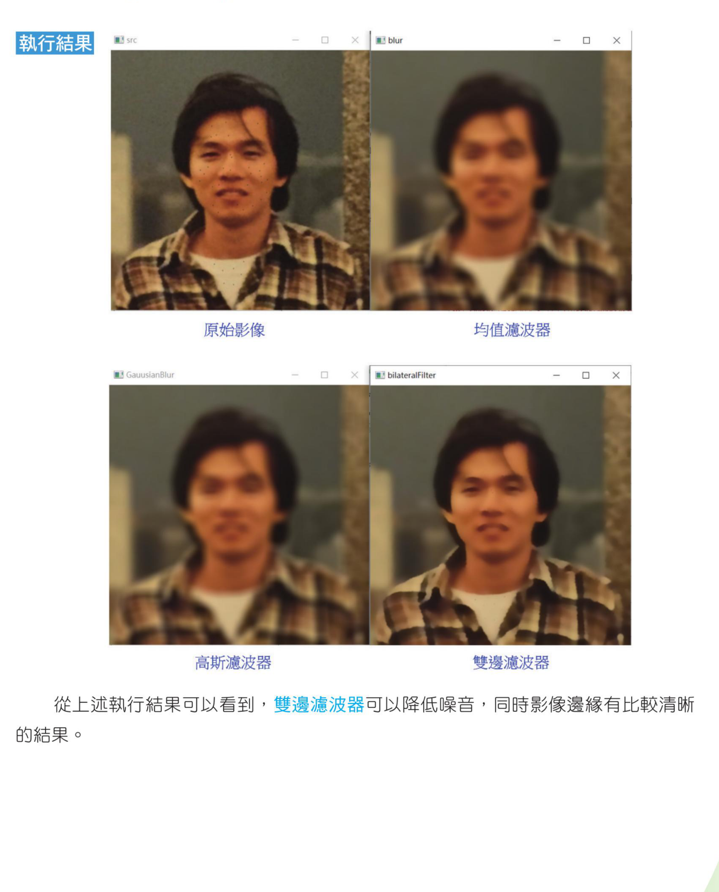
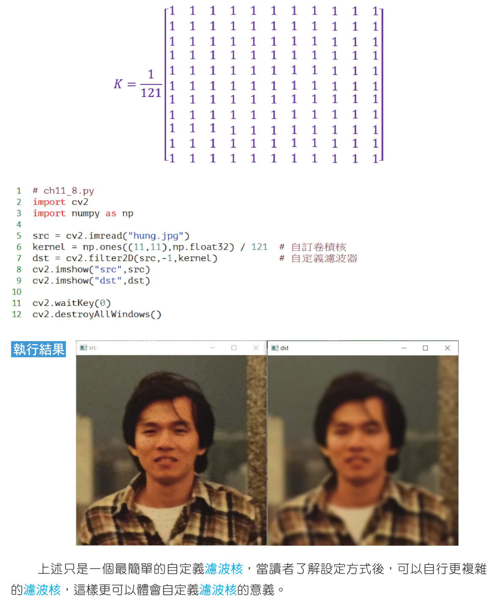
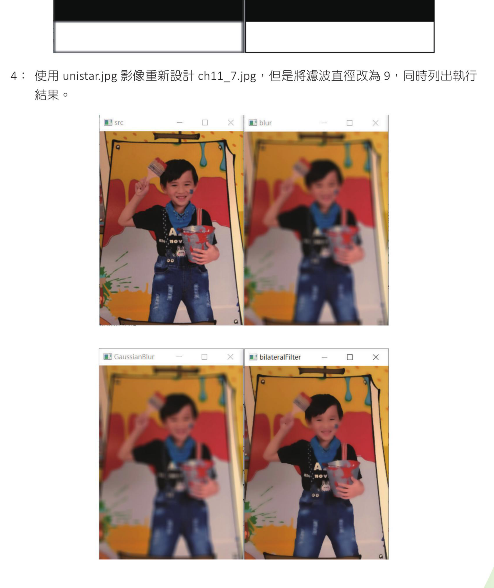

第 11 章
删除影像杂讯
本章共 7 个小节 · 平滑影像 · 均值/方框/中值/高斯/双边滤波 · 2D 滤波核
建立平滑影像的目的，是降低影像中的杂讯或噪声；副作用是细节和边缘可能变得模糊。OpenCV 中常见的平滑处理可以分成线性滤波器和非线性滤波器：
blur()、boxFilter()、GaussianBlur() 属于线性滤波；
medianBlur() 和 bilateralFilter() 属于非线性滤波。
11-1
建立平滑影像需认识的名词
滤波核是以某个像素为中心，连同周围像素组成的矩阵。常见核大小有 3x3、5x5、7x7。
核越大，参与计算的邻近像素越多，降噪或模糊效果越明显，但影像细节也越容易被抹平。
| 名词 | 说明 |
|---|
| 滤波核 | 参与计算的邻域矩阵，例如 3x3 表示中心点周围 9 个位置。 |
| 锚点 anchor | 核中对齐当前像素的位置，默认 (-1, -1) 表示核中心。 |
| 线性滤波 | 使用加权求和得到新像素，典型代表是均值、方框和高斯滤波。 |
| 非线性滤波 | 不直接做线性加权，典型代表是中值滤波和双边滤波。 |
11-2
均值滤波器
均值滤波器使用滤波核覆盖邻域，把邻域像素值相加后取平均值，再把平均值作为中心像素的新值。
在 OpenCV 中使用 cv2.blur() 完成，核大小由 ksize 指定。
dst = cv2.blur(src, ksize, anchor, borderType)
| 参数 | 说明 |
|---|
src | 来源影像。 |
ksize | 滤波核大小，例如 (3, 3)、(5, 5)、(7, 7)。 |
anchor | 核的锚点，默认 (-1, -1)。 |
borderType | 边界补值方式，通常可使用默认值。 |
程序实例 ch11_1.py：使用 3x3、5x5、7x7 均值滤波核
# ch11_1.py
import cv2
src = cv2.imread("hung.jpg")
dst1 = cv2.blur(src, (3, 3))
dst2 = cv2.blur(src, (5, 5))
dst3 = cv2.blur(src, (7, 7))
cv2.imshow("src", src)
cv2.imshow("dst 3 x 3", dst1)
cv2.imshow("dst 5 x 5", dst2)
cv2.imshow("dst 7 x 7", dst3)
cv2.waitKey(0)
cv2.destroyAllWindows()

原始影像与 3x3 均值滤波结果，参考原书第 11-8 页。
程序实例 ch11_2.py：使用 29x29 均值滤波核观察强模糊
# ch11_2.py
import cv2
src = cv2.imread("hung.jpg")
dst = cv2.blur(src, (29, 29))
cv2.imshow("src", src)
cv2.imshow("dst 29 x 29", dst)
cv2.waitKey(0)
cv2.destroyAllWindows()

核越大，平滑效果越强，同时脸部和背景细节也越模糊，参考原书第 11-9 页。
11-3
方框滤波器
方框滤波器使用 cv2.boxFilter()。当 normalize=True 时，计算结果会除以核中元素总数，效果接近均值滤波；
当 normalize=False 时，邻域像素直接相加，容易因为数值超过 255 而产生过曝或大片白色。
dst = cv2.boxFilter(src, ddepth, ksize, anchor, normalize, borderType)
程序实例 ch11_2_1.py：方框滤波器与 normalize 参数
# ch11_2_1.py
import cv2
src = cv2.imread("hung.jpg")
dst1 = cv2.boxFilter(src, -1, (2, 2), normalize=False)
dst2 = cv2.boxFilter(src, -1, (3, 3), normalize=False)
dst3 = cv2.boxFilter(src, -1, (5, 5), normalize=False)
cv2.imshow("src", src)
cv2.imshow("dst 2 x 2", dst1)
cv2.imshow("dst 3 x 3", dst2)
cv2.imshow("dst 5 x 5", dst3)
cv2.waitKey(0)
cv2.destroyAllWindows()

未正规化的方框滤波会把邻域值累加，核变大后影像更容易变亮甚至接近全白，参考原书第 11-12 页。
11-4
中值滤波器
中值滤波器不取平均，而是把滤波核内的像素排序后取中间值，因此对椒盐噪声特别有效。
OpenCV 使用 cv2.medianBlur()，核大小 ksize 必须是大于 1 的奇数。
dst = cv2.medianBlur(src, ksize)
程序实例 ch11_3.py：用数组说明中值滤波
# ch11_3.py
import numpy as np
x = np.array([149, 150, 151, 149, 255, 151, 149, 150, 151])
x.sort()
print(x)
print("median =", x[4])

将滤波核内的像素排序后取中间值，参考原书第 11-14 页。
程序实例 ch11_4.py：medianBlur() 对杂讯影像降噪
# ch11_4.py
import cv2
src = cv2.imread("hung.jpg")
dst1 = cv2.medianBlur(src, 3)
dst2 = cv2.medianBlur(src, 5)
dst3 = cv2.medianBlur(src, 7)
cv2.imshow("src", src)
cv2.imshow("dst 3 x 3", dst1)
cv2.imshow("dst 5 x 5", dst2)
cv2.imshow("dst 7 x 7", dst3)
cv2.waitKey(0)
cv2.destroyAllWindows()
中值滤波可以有效消除黑白噪点，但核越大，影像越模糊，参考原书第 11-15 页。
11-5
高斯滤波器
高斯滤波器使用高斯函数建立权重，靠近中心的像素权重较大，距离中心越远权重越小。
和均值滤波相比，高斯滤波通常能得到较自然的平滑效果。OpenCV 使用 cv2.GaussianBlur()。
dst = cv2.GaussianBlur(src, ksize, sigmaX, sigmaY, borderType)
程序实例 ch11_5.py：GaussianBlur() 对比不同核大小
# ch11_5.py
import cv2
src = cv2.imread("hung.jpg")
dst1 = cv2.GaussianBlur(src, (3, 3), 0)
dst2 = cv2.GaussianBlur(src, (5, 5), 0)
dst3 = cv2.GaussianBlur(src, (29, 29), 0)
cv2.imshow("src", src)
cv2.imshow("Gaussian 3 x 3", dst1)
cv2.imshow("Gaussian 5 x 5", dst2)
cv2.imshow("Gaussian 29 x 29", dst3)
cv2.waitKey(0)
cv2.destroyAllWindows()

高斯滤波会平滑噪声，核越大模糊越明显，参考原书第 11-19 页。
书中还将均值滤波和高斯滤波放在同一张黑白边缘图上比较。均值滤波对所有邻域像素给相同权重；
高斯滤波让中心附近权重更高，因此边界过渡通常更自然。
程序实例 ch11_6.py：均值滤波与高斯滤波的边缘比较
# ch11_6.py
import cv2
src = cv2.imread("edge.jpg")
dst1 = cv2.blur(src, (3, 3))
dst2 = cv2.blur(src, (7, 7))
dst3 = cv2.GaussianBlur(src, (3, 3), 0)
dst4 = cv2.GaussianBlur(src, (7, 7), 0)
cv2.imshow("mean 3 x 3", dst1)
cv2.imshow("mean 7 x 7", dst2)
cv2.imshow("Gauss 3 x 3", dst3)
cv2.imshow("Gauss 7 x 7", dst4)
cv2.waitKey(0)
cv2.destroyAllWindows()

高斯滤波在边缘过渡上会呈现和均值滤波不同的权重效果，参考原书第 11-21 页。
11-6
双边滤波器
双边滤波器除了考虑空间距离，也会考虑像素值差异。它可以在降低噪声的同时尽量保留边缘，
常用于需要保边平滑的影像处理。OpenCV 使用 cv2.bilateralFilter()。
dst = cv2.bilateralFilter(src, d, sigmaColor, sigmaSpace)
| 参数 | 说明 |
|---|
d | 滤波时使用的像素邻域直径。 |
sigmaColor | 颜色空间标准差，值越大，差异较大的颜色也会互相影响。 |
sigmaSpace | 坐标空间标准差，值越大，距离更远的像素也会参与计算。 |
程序实例 ch11_7.py：均值、高斯、双边滤波比较
# ch11_7.py
import cv2
src = cv2.imread("hung.jpg")
dst_blur = cv2.blur(src, (9, 9))
dst_gaussian = cv2.GaussianBlur(src, (9, 9), 0)
dst_bilateral = cv2.bilateralFilter(src, 9, 75, 75)
cv2.imshow("src", src)
cv2.imshow("blur", dst_blur)
cv2.imshow("GaussianBlur", dst_gaussian)
cv2.imshow("bilateralFilter", dst_bilateral)
cv2.waitKey(0)
cv2.destroyAllWindows()

双边滤波的平滑结果较能保留脸部轮廓和边缘，参考原书第 11-23 页。
11-7
2D 滤波核
filter2D() 允许自定义二维滤波核。只要把核写成 Numpy 阵列，就可以实现平滑、锐化、边缘强调等效果。
本节示例先用平均核做平滑，再展示自定义核对影像的影响。
dst = cv2.filter2D(src, ddepth, kernel, anchor, delta, borderType)
程序实例 ch11_8.py：自定义滤波核
# ch11_8.py
import cv2
import numpy as np
src = cv2.imread("hung.jpg")
kernel = np.ones((5, 5), np.float32) / 25
dst = cv2.filter2D(src, -1, kernel)
cv2.imshow("src", src)
cv2.imshow("filter2D", dst)
cv2.waitKey(0)
cv2.destroyAllWindows()

使用自定义平均核得到的平滑效果，参考原书第 11-25 页。
1. 修改 ch11_1.py，比较 9x9、15x15 与 21x21 均值滤波核的效果。
2. 使用 blur()、GaussianBlur()、medianBlur() 处理同一张含噪声影像，并比较边缘与细节保留情况。
3. 设计一个 filter2D() 自定义核，观察它对影像亮度、边缘或平滑程度的影响。

习题参考图，参考原书第 11-26 至 11-27 页。